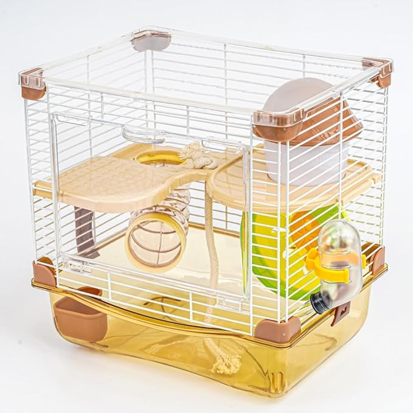
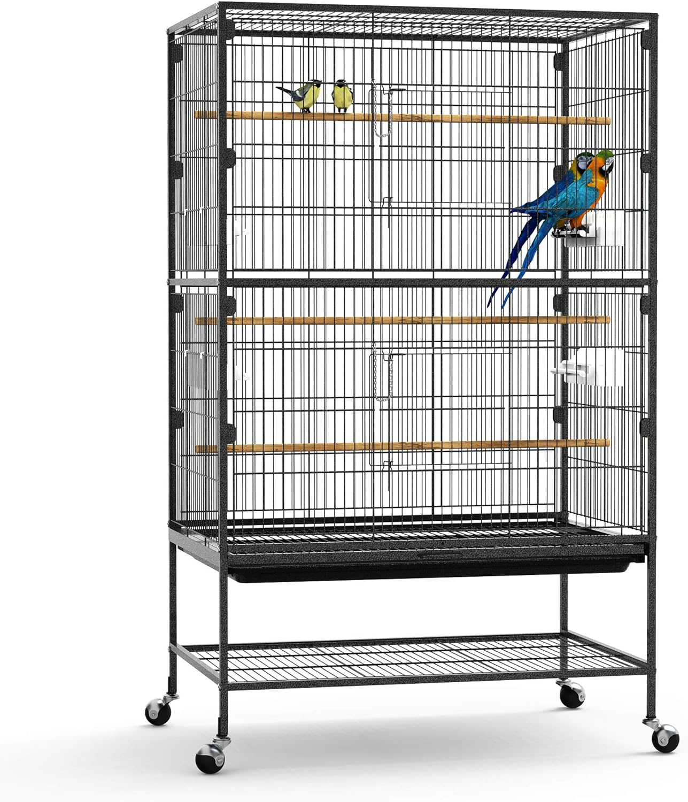

Caring for your feathered friends requires a little bit of effort, not an extensive amount. Here I'll highlight some key points to keep in mind, but then I'll direct you towards additional resources for further research (and as a good, responsible parrot owner, I know you'll want to dive deeper :D).
Don't be tempted to purchase those tiny, confining cages you often find at pet stores. Even if you have just one
parrot, the space provided by such cages is inadequate. Housing a parrot in that sort of space is akin to confining
you to a broom closet for the entirety of your existence. Would you enjoy living in a broom closet? Didn't
think so.
Parrots require ample room to spread their wings, play, and explore to ensure their happiness. They thrive in
environments where they can flit about freely, surrounded by toys and perches, devoid of the confines which clip
their natural instincts. Denying them this space is denying them joy.
BAD cage:

Good cages are spacious, with lots of room for flying, climbing, and playing, equipped with hiding places
where parrots can retreat if they feel the need for security. These habitats can vary in style and can either be
assembled by you or purchased pre-constructed.
Here's an example of a GREAT cage:

And here's a video on setting up an ideal parrot living space that allows for plenty of flight and enrichment
(YouTube channel: Flying Fids):
The diet of a parrot is crucial for its health and well-being! Deviating from their nutritional needs, whether by
overfeeding or underfeeding, can lead to various illnesses.
A balanced diet for a parrot includes clean water, specialized parrot pellets, a variety of fresh fruits and
vegetables, and some seeds and nuts. High-quality pellets should make up the bulk of their diet, supplemented with
fresh produce. Seeds and nuts are high in fat and should be given in moderation – consider them treats rather than
main course items. Here is a nutrition
guide you can refer to. It's generally a good idea to avoid commercial treats and snacks, as they often
contain sugar, preservatives, and other ingredients that can be detrimental to your parrot's health.
For advice on proper feeding, check out this video on good diet practices for parrots (YouTube Channel:
BirdNerdSophie):
Parrots are highly social creatures. Consequently, they should have avian companions to socialize with. Imagine if
you had no other humans to interact with and your only company was a creature from another planet—sounds like the
plot of a science fiction novel, doesn't it? So, consider your parrot's needs for social interaction and think about
getting them a feathered friend (or a few).
Check out this video of parrots enjoying each other's company and how to introduce and bond two Birds together
(YouTube Channel: TheParrotTeacher):
And that refers to you. Yes, you can and should be a friend to your parrot. This means acknowledging their
individuality and sentience and not mimicking Elmyra from Tiny Toon Adventures with her tendency to
inadvertently
squeeze her pets too tightly.
Bonding with your parrot is a gradual process. Only after establishing trust should you progress to cuddling and
other forms of physical affection. Initially, you can engage with your parrot by talking to it, offering treats, and
gently getting it accustomed to your presence and touch. Discover more about bonding with your parrot in this
informative video (YouTube Channel: Ricco_the_greenpied_irn):
Picture this: you, stuck in a single room forever—sounds like the ultimate bummer, right? Now, let's flap to a
brighter beat. Our feathered parrot pals are born for the samba of the skies, not the solitude of a cage! It's time
to ruffle some feathers (in a good way) and set the stage for parrot playtime paradise!
Whether it's a
boogie-woogie
in the living room, a tango in a tailor-made playpen, or a conga line on the lawn (eyes peeled for those sneaky
predator party crashers, though), giving our winged friends some free-fly fun is absolutely non-negotiable. So,
crank up the tunes and let them loose for a 10-20 minute daily dance-off—they'll be squawking with joy in no time!